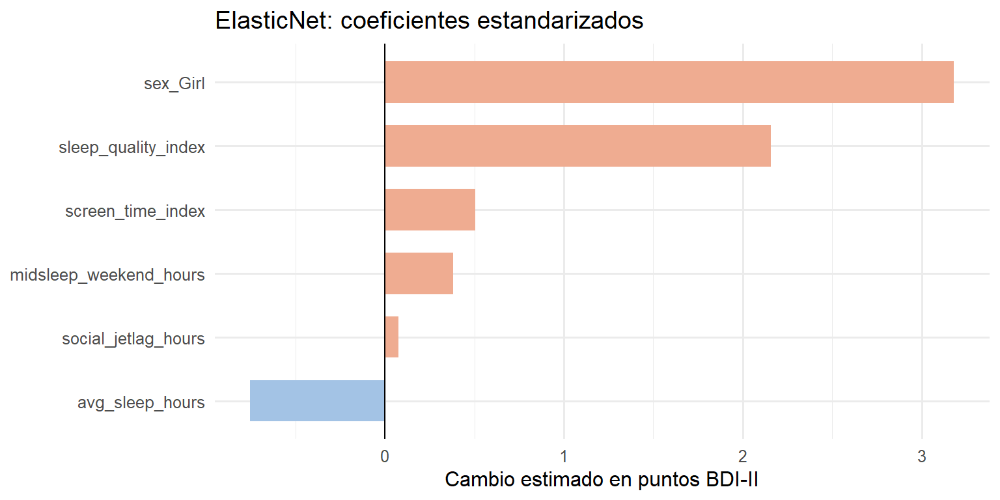
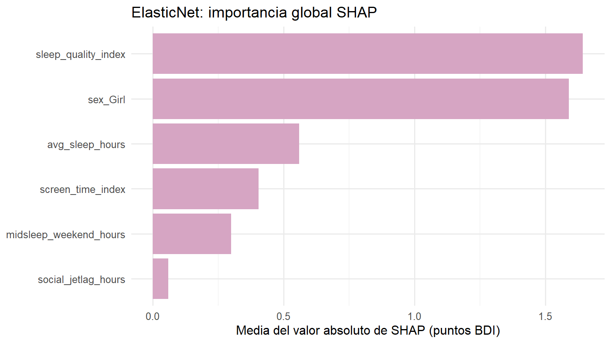
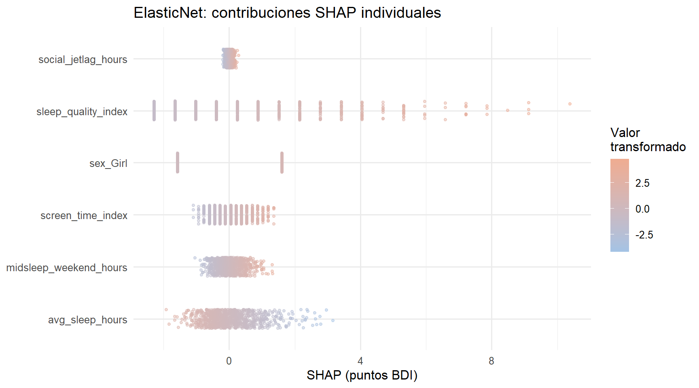
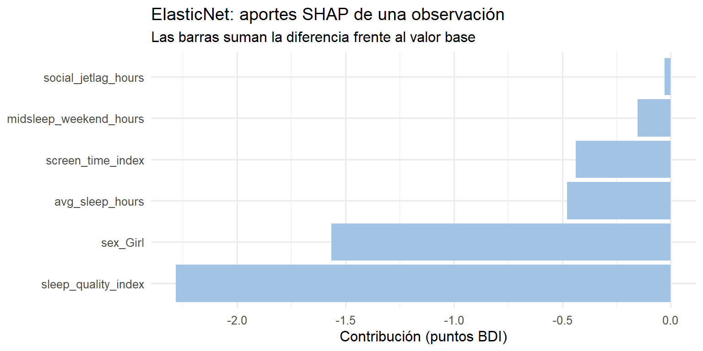
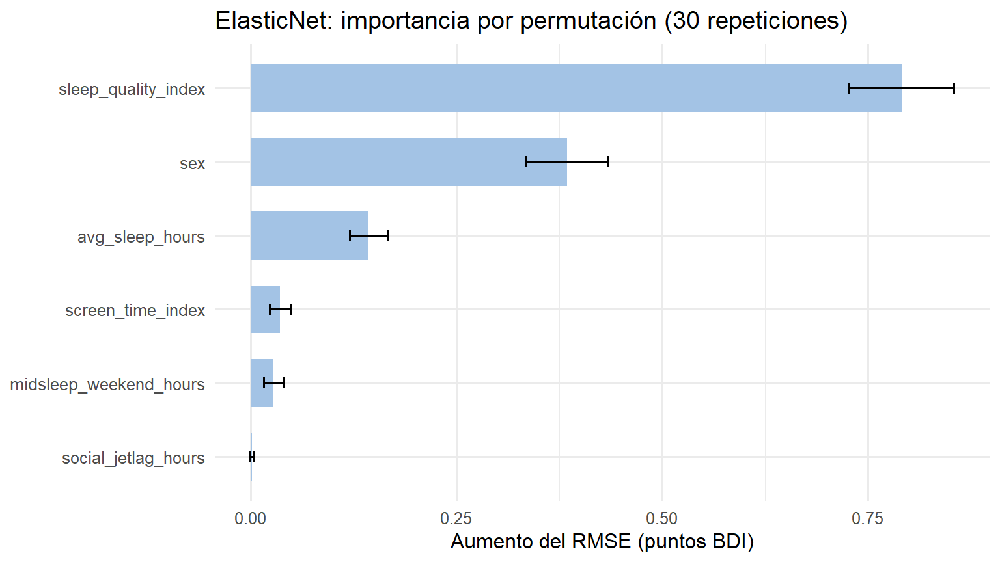

Capítulo 6 Interpretabilidad de los modelos finales
6.1 Configuración, modelos y partición
Los análisis de explicabilidad se realizan después de seleccionar y entrenar los modelos finales. El conjunto de prueba se usa para medir cómo se comportan en observaciones no vistas; el entrenamiento define las medias, desviaciones y datos de referencia. Es imprescindible mantener el mismo corte para ambas respuestas.
library(dplyr)
library(tidyr)
library(ggplot2)
library(knitr)
library(glmnet)
library(yardstick)
semilla <- 42
ruta_datos <- "screen_time_mental_health.csv"
ruta_split <- "resultados/modelado_libro/split_indices_R.csv"
if (!file.exists(ruta_datos)) stop("Falta el archivo de datos")
if (!file.exists(ruta_split)) {
stop("Primero ejecuta el capítulo 01, que genera split_indices_R.csv")
}
df <- read.csv(ruta_datos, stringsAsFactors = FALSE)
indices <- read.csv(ruta_split, stringsAsFactors = FALSE)
df$sex <- factor(df$sex, levels = c("Boy", "Girl"))
df$depressed <- as.integer(as.character(df$depressed))
train <- df[match(indices$subject_id[indices$conjunto == "train"],
df$subject_id), ]
test <- df[match(indices$subject_id[indices$conjunto == "test"],
df$subject_id), ]
stopifnot(!anyNA(train$subject_id), !anyNA(test$subject_id))
numericas <- c(
"sleep_quality_index", "avg_sleep_hours",
"midsleep_weekend_hours", "social_jetlag_hours",
"screen_time_index"
)
predictores <- c(numericas, "sex")
medias_train <- vapply(train[, numericas, drop = FALSE], mean, numeric(1))
desvios_train <- vapply(train[, numericas, drop = FALSE], sd, numeric(1))
stopifnot(all(desvios_train > 0))
X_train_num <- scale(as.matrix(train[, numericas, drop = FALSE]),
center = medias_train, scale = desvios_train)
X_test_num <- scale(as.matrix(test[, numericas, drop = FALSE]),
center = medias_train, scale = desvios_train)
X_train <- cbind(X_train_num, sex_Girl = as.integer(train$sex == "Girl"))
X_test <- cbind(X_test_num, sex_Girl = as.integer(test$sex == "Girl"))
stopifnot(identical(colnames(X_train), colnames(X_test)))
kable(data.frame(Variable = colnames(X_train),
Tipo = c(rep("Estandarizada", 5), "Binaria: chica=1")))| Variable | Tipo |
|---|---|
| sleep_quality_index | Estandarizada |
| avg_sleep_hours | Estandarizada |
| midsleep_weekend_hours | Estandarizada |
| social_jetlag_hours | Estandarizada |
| screen_time_index | Estandarizada |
| sex_Girl | Binaria: chica=1 |
6.1.1 ElasticNet y CatBoost finales para el ejemplo
El ElasticNet se interpreta mediante sus coeficientes y SHAP lineal. En clasificación se utiliza CatBoost, que permite calcular importancia nativa y valores SHAP del ensamble. Los hiperparámetros de abajo son demostrativos: no se seleccionan aquí usando el test, y no equivalen automáticamente a los mejores parámetros obtenidos en Python.
alpha_final <- 0.5
lambda_final <- 0.01
elasticnet_final <- glmnet::glmnet(
x = X_train,
y = train$bdi_total,
family = "gaussian",
alpha = alpha_final,
lambda = lambda_final,
standardize = FALSE
)
pred_elastic_sin_recorte <- as.numeric(
predict(elasticnet_final, newx = X_test, s = lambda_final)
)
pred_elastic <- pmax(0, pmin(63, pred_elastic_sin_recorte))
coeficientes_en <- as.matrix(coef(elasticnet_final, s = lambda_final))
coeficientes_en## s=0.01
## (Intercept) 5.69679704
## sleep_quality_index 2.15795193
## avg_sleep_hours -0.75375150
## midsleep_weekend_hours 0.38064847
## social_jetlag_hours 0.07436213
## screen_time_index 0.50451658
## sex_Girl 3.18079291set.seed(semilla)
pool_train <- catboost::catboost.load_pool(
data = X_train, label = train$depressed
)
pool_test <- catboost::catboost.load_pool(
data = X_test, label = test$depressed
)
catboost_final <- catboost::catboost.train(
learn_pool = pool_train,
params = list(
loss_function = "Logloss",
iterations = 500,
depth = 3,
learning_rate = 0.03,
l2_leaf_reg = 4,
auto_class_weights = "Balanced",
random_seed = semilla,
thread_count = 2,
verbose = FALSE
)
)
prob_catboost <- as.numeric(catboost::catboost.predict(
catboost_final, pool_test, prediction_type = "Probability"
))6.2 Coeficientes del ElasticNet
Para variables estandarizadas, un coeficiente expresa el cambio estimado de BDI-II asociado a una desviación estándar del predictor, manteniendo constantes las demás variables. Para sex_Girl, expresa el contraste entre chicas y chicos. El efecto por unidad original se obtiene dividiendo el coeficiente numérico por la desviación del predictor en entrenamiento; la categoría binaria no se divide.
tabla_coeficientes <- data.frame(
Variable = rownames(coeficientes_en)[-1],
Coeficiente_por_DE = as.numeric(coeficientes_en[-1, 1])
)
tabla_coeficientes$Efecto_por_unidad <- tabla_coeficientes$Coeficiente_por_DE
for (j in numericas) {
tabla_coeficientes$Efecto_por_unidad[
tabla_coeficientes$Variable == j
] <- tabla_coeficientes$Coeficiente_por_DE[
tabla_coeficientes$Variable == j
] / desvios_train[j]
}
tabla_coeficientes$En_cero <- abs(tabla_coeficientes$Coeficiente_por_DE) < 1e-8
kable(tabla_coeficientes, digits = 3)| Variable | Coeficiente_por_DE | Efecto_por_unidad | En_cero |
|---|---|---|---|
| sleep_quality_index | 2.158 | 2.535 | FALSE |
| avg_sleep_hours | -0.754 | -0.591 | FALSE |
| midsleep_weekend_hours | 0.381 | 0.268 | FALSE |
| social_jetlag_hours | 0.074 | 0.065 | FALSE |
| screen_time_index | 0.505 | 0.490 | FALSE |
| sex_Girl | 3.181 | 3.181 | FALSE |
ggplot(tabla_coeficientes,
aes(x = reorder(Variable, Coeficiente_por_DE),
y = Coeficiente_por_DE,
fill = Coeficiente_por_DE > 0)) +
geom_col(width = 0.65) +
coord_flip() +
geom_hline(yintercept = 0, linewidth = 0.4) +
scale_fill_manual(values = c("#A3C3E5", "#EFAC91"), guide = "none") +
labs(title = "ElasticNet: coeficientes estandarizados",
x = NULL, y = "Cambio estimado en puntos BDI-II") +
theme_minimal(base_size = 12)
Un coeficiente igual a cero puede reflejar selección de variables por la componente L1. Su anulación o magnitud depende del lambda y alpha elegidos; no debe afirmarse que un predictor carece de asociación causal.
6.3 Importancia nativa de CatBoost
Se calculan dos medidas: PredictionValuesChange, asociada al cambio de la salida del modelo, y LossFunctionChange, que refleja cuánto se deteriora su función de pérdida al retirar información de la variable. Ninguna ofrece por sí sola la dirección de los efectos. Las variables correlacionadas pueden repartirse la importancia.
imp_pvc <- as.numeric(catboost::catboost.get_feature_importance(
catboost_final, pool = pool_test, type = "PredictionValuesChange"
))
imp_lfc <- as.numeric(catboost::catboost.get_feature_importance(
catboost_final, pool = pool_test, type = "LossFunctionChange"
))
importancias_catboost <- data.frame(
Variable = colnames(X_test),
PredictionValuesChange = imp_pvc,
LossFunctionChange = imp_lfc
)
kable(importancias_catboost, digits = 4)importancias_catboost %>%
pivot_longer(-Variable, names_to = "Metodo", values_to = "Importancia") %>%
ggplot(aes(x = reorder(Variable, Importancia), y = Importancia)) +
geom_col(fill = "#A3C3E5") +
coord_flip() +
facet_wrap(~Metodo, scales = "free_x") +
labs(title = "CatBoost: medidas nativas de importancia",
x = NULL, y = "Importancia") +
theme_minimal(base_size = 12)6.4 SHAP: explicación global y local
Para cada observación, SHAP descompone la salida del modelo como suma de un valor base y contribuciones de las variables. En CatBoost binario, la descomposición habitual corresponde a la escala de log-odds; al aplicar la función logística se obtiene la probabilidad. En ElasticNet los aportes son en puntos BDI-II antes de recortar al rango [0, 63]. Por eso no deben compararse numéricamente las escalas de ambos modelos.
\[ f(x_i) = \phi_0 + \sum_{j=1}^{p} \phi_{ij}. \]
6.4.1 SHAP lineal exacto para ElasticNet
En un modelo lineal con datos de referencia del train, la contribución de la variable \(j\) es el coeficiente multiplicado por la diferencia entre la observación y la media de referencia:
\[ \phi_{ij}=\beta_j(x_{ij}-\overline{x}_{j,\mathrm{train}}). \]
betas <- as.numeric(coeficientes_en[-1, 1])
intercepto <- as.numeric(coeficientes_en[1, 1])
medias_X <- colMeans(X_train)
base_en <- intercepto + sum(medias_X * betas)
X_centrado <- sweep(X_test, 2, medias_X, "-")
shap_en <- sweep(X_centrado, 2, betas, "*")
colnames(shap_en) <- colnames(X_test)
reconstruido_en <- base_en + rowSums(shap_en)
error_aditividad_en <- max(abs(reconstruido_en - pred_elastic_sin_recorte))
cat("Base ElasticNet:", round(base_en, 4), "puntos BDI\n")## Base ElasticNet: 7.2628 puntos BDI## Error máximo de aditividad: 3.553e-15shap_global_en <- data.frame(
Variable = colnames(shap_en),
Media_abs_SHAP = colMeans(abs(shap_en))
)
ggplot(shap_global_en,
aes(x = reorder(Variable, Media_abs_SHAP), y = Media_abs_SHAP)) +
geom_col(fill = "#D6A5C3") +
coord_flip() +
labs(title = "ElasticNet: importancia global SHAP",
x = NULL, y = "Media del valor absoluto de SHAP (puntos BDI)") +
theme_minimal(base_size = 12)
6.4.2 SHAP de CatBoost y prueba de aditividad
CatBoost ofrece valores SHAP nativos. La última columna contiene el valor base. Su suma debe reconstruir la salida RawFormulaVal, no la probabilidad directamente.
shap_cb_completo <- as.matrix(catboost::catboost.get_feature_importance(
catboost_final, pool = pool_test, type = "ShapValues"
))
shap_cb <- shap_cb_completo[, seq_len(ncol(X_test)), drop = FALSE]
colnames(shap_cb) <- colnames(X_test)
base_cb <- shap_cb_completo[, ncol(shap_cb_completo)]
raw_cb <- as.numeric(catboost::catboost.predict(
catboost_final, pool_test, prediction_type = "RawFormulaVal"
))
error_aditividad_cb <- max(abs(base_cb + rowSums(shap_cb) - raw_cb))
cat("Error máximo SHAP CatBoost:", signif(error_aditividad_cb, 4), "\n")
shap_global_cb <- data.frame(
Variable = colnames(shap_cb),
Media_abs_SHAP = colMeans(abs(shap_cb))
)
kable(shap_global_cb, digits = 4)6.4.3 Distribuciones de SHAP (beeswarm simplificado)
El conjunto de puntos permite observar signo, magnitud y heterogeneidad. En estos gráficos se utiliza jitter para evitar el solapamiento; no es idéntico al algoritmo de colocación beeswarm de Python.
shap_en_largo <- as.data.frame(shap_en) %>%
mutate(Fila = row_number()) %>%
pivot_longer(-Fila, names_to = "Variable", values_to = "SHAP")
valores_originales <- as.data.frame(X_test) %>%
mutate(Fila = row_number()) %>%
pivot_longer(-Fila, names_to = "Variable", values_to = "Valor")
shap_en_largo <- left_join(shap_en_largo, valores_originales,
by = c("Fila", "Variable"))
ggplot(shap_en_largo,
aes(x = SHAP, y = Variable, color = Valor)) +
geom_jitter(height = 0.18, width = 0, alpha = 0.45, size = 1) +
scale_color_gradient(low = "#A3C3E5", high = "#EFAC91") +
labs(title = "ElasticNet: contribuciones SHAP individuales",
x = "SHAP (puntos BDI)", y = NULL, color = "Valor\ntransformado") +
theme_minimal(base_size = 12)
shap_cb_largo <- as.data.frame(shap_cb) %>%
mutate(Fila = row_number()) %>%
pivot_longer(-Fila, names_to = "Variable", values_to = "SHAP") %>%
left_join(valores_originales, by = c("Fila", "Variable"))
ggplot(shap_cb_largo, aes(x = SHAP, y = Variable, color = Valor)) +
geom_jitter(height = 0.18, width = 0, alpha = 0.45, size = 1) +
scale_color_gradient(low = "#A3C3E5", high = "#EFAC91") +
labs(title = "CatBoost: contribuciones SHAP individuales",
x = "SHAP (log-odds)", y = NULL, color = "Valor\ntransformado") +
theme_minimal(base_size = 12)6.4.4 Explicación individual y gráfico de contribuciones
Para ilustrar un caso del test, el modelo parte de su valor base y suma efectos positivos o negativos. Una contribución positiva aumenta el puntaje BDI del ElasticNet o los log-odds del CatBoost; no es una afirmación causal.
posicion <- 1
explicacion_en <- data.frame(
Variable = colnames(shap_en),
Contribucion = as.numeric(shap_en[posicion, ])
)
cat("Sujeto:", test$subject_id[posicion], "\n")## Sujeto: 6## Base: 7.26## Predicción lineal: 2.32ggplot(explicacion_en,
aes(x = reorder(Variable, Contribucion), y = Contribucion,
fill = Contribucion > 0)) +
geom_col() + coord_flip() +
scale_fill_manual(values = c("#A3C3E5", "#EFAC91"), guide = "none") +
labs(title = "ElasticNet: aportes SHAP de una observación",
subtitle = "Las barras suman la diferencia frente al valor base",
x = NULL, y = "Contribución (puntos BDI)") +
theme_minimal(base_size = 12)
6.4.5 Dependencia y posibles no linealidades
En CatBoost, los gráficos de dependencia comparan el valor original de una variable con su contribución SHAP, coloreada por sexo. Sirven para investigar cambios de pendiente, umbrales e interacciones. No implican una relación causal.
variable_interes <- "sleep_quality_index"
dependencia_cb <- data.frame(
Valor_original = test[[variable_interes]],
SHAP = shap_cb[, variable_interes],
Sexo = test$sex
)
ggplot(dependencia_cb,
aes(x = Valor_original, y = SHAP, color = Sexo)) +
geom_point(alpha = 0.55, size = 1.6) +
geom_smooth(se = FALSE, method = "loess", linewidth = 0.8) +
scale_color_manual(values = c(Boy = "#9AC7BD", Girl = "#D6A5C3")) +
labs(title = "CatBoost: dependencia SHAP de calidad del sueño",
x = "Índice de calidad del sueño", y = "SHAP (log-odds)") +
theme_minimal(base_size = 12)6.5 LIME: explicaciones locales
LIME aproxima localmente las predicciones de un modelo con una regresión interpretable ajustada sobre observaciones perturbadas. En R el paquete lime necesita conocer cómo obtener la predicción de un objeto. Para glmnet y el modelo CatBoost mostrado aquí se requieren pequeños métodos de adaptación; por eso, a diferencia de las transformaciones estadísticas anteriores, este bloque sí declara métodos S3.
library(lime)
modelo_lime_en <- structure(
list(modelo = elasticnet_final, tipo = "regression",
numericas = numericas, medias = medias_train,
desvios = desvios_train, lambda = lambda_final),
class = "modelo_lime_libro"
)
model_type.modelo_lime_libro <- function(x, ...) x$tipo
predict_model.modelo_lime_libro <- function(x, newdata, type, ...) {
mat_num <- scale(as.matrix(newdata[, x$numericas, drop = FALSE]),
center = x$medias, scale = x$desvios)
mat <- cbind(mat_num,
sex_Girl = as.integer(as.character(newdata$sex) == "Girl"))
yhat <- as.numeric(predict(x$model, newx = mat, s = x$lambda))
data.frame(Response = pmax(0, pmin(63, yhat)))
}
set.seed(semilla)
expl_lime_en <- lime::lime(train[, predictores], modelo_lime_en)
casos_en <- test[c(1, 2, 3), predictores]
explicaciones_lime <- lime::explain(
casos_en, expl_lime_en, n_features = 6, n_permutations = 5000
)
lime::plot_features(explicaciones_lime)En el original se interpretan tres perfiles de clasificación (verdadero positivo, falso negativo y falso positivo) y tres de regresión (BDI bajo, cercano a 14 y alto). Para replicar esa selección, se debe calcular primero la predicción de todo el test y utilizar el umbral elegido con el train, no un umbral improvisado durante la interpretación.
6.5.1 LIME frente a SHAP
Los métodos tienen objetivos distintos. SHAP distribuye la salida del modelo respecto de una referencia global; LIME aproxima el comportamiento del modelo cerca de un caso. Conviene contrastar el signo y el orden de las principales variables, pero no comparar directamente coeficientes en probabilidad con valores SHAP en log-odds.
6.6 Importancia por permutación del ElasticNet
La importancia por permutación mide cuánto empeora el RMSE al desordenar una variable del test. Aquí se realizan 30 permutaciones para cada predictor, manteniendo el modelo fijo. Es una medida de dependencia predictiva, no de causalidad; la correlación entre variables puede reducir la importancia individual.
set.seed(42)
rmse_base <- sqrt(mean((test$bdi_total - pred_elastic)^2))
permutaciones <- data.frame(
Variable = predictores,
Aumento_RMSE = NA_real_,
DE = NA_real_
)
for (j in seq_along(predictores)) {
variable <- predictores[j]
aumentos <- numeric(30)
for (b in 1:30) {
test_permutado <- test
test_permutado[[variable]] <- sample(test_permutado[[variable]])
num_perm <- scale(as.matrix(test_permutado[, numericas, drop = FALSE]),
center = medias_train, scale = desvios_train)
X_perm <- cbind(num_perm,
sex_Girl = as.integer(test_permutado$sex == "Girl"))
pred_perm <- as.numeric(predict(
elasticnet_final, newx = X_perm, s = lambda_final
))
pred_perm <- pmax(0, pmin(63, pred_perm))
rmse_perm <- sqrt(mean((test$bdi_total - pred_perm)^2))
aumentos[b] <- rmse_perm - rmse_base
}
permutaciones$Aumento_RMSE[j] <- mean(aumentos)
permutaciones$DE[j] <- sd(aumentos)
}
permutaciones <- permutaciones %>% arrange(desc(Aumento_RMSE))
kable(permutaciones, digits = 4)| Variable | Aumento_RMSE | DE |
|---|---|---|
| sleep_quality_index | 0.7913 | 0.0638 |
| sex | 0.3845 | 0.0497 |
| avg_sleep_hours | 0.1436 | 0.0235 |
| screen_time_index | 0.0359 | 0.0130 |
| midsleep_weekend_hours | 0.0278 | 0.0118 |
| social_jetlag_hours | 0.0013 | 0.0021 |
ggplot(permutaciones,
aes(x = reorder(Variable, Aumento_RMSE), y = Aumento_RMSE)) +
geom_col(fill = "#A3C3E5", width = 0.65) +
geom_errorbar(aes(ymin = Aumento_RMSE - DE,
ymax = Aumento_RMSE + DE), width = 0.15) +
coord_flip() +
labs(title = "ElasticNet: importancia por permutación (30 repeticiones)",
x = NULL, y = "Aumento del RMSE (puntos BDI)") +
theme_minimal(base_size = 12)
6.7 Guardado y reproducibilidad
Para conservar los resultados de R se exportan coeficientes, SHAP global del ElasticNet e importancia por permutación. Si CatBoost está instalado, también pueden exportarse sus medidas; los valores no deben sustituirse por los publicados en Python.
dir.create("resultados/modelado_libro/interpretabilidad",
recursive = TRUE, showWarnings = FALSE)
write.csv(tabla_coeficientes,
"resultados/modelado_libro/interpretabilidad/coeficientes_elasticnet.csv",
row.names = FALSE)
write.csv(shap_global_en,
"resultados/modelado_libro/interpretabilidad/shap_global_elasticnet.csv",
row.names = FALSE)
write.csv(permutaciones,
"resultados/modelado_libro/interpretabilidad/permutacion_elasticnet.csv",
row.names = FALSE)
saveRDS(
list(modelo_elasticnet = elasticnet_final,
medias = medias_train, desvios = desvios_train,
variables = colnames(X_train),
lambda = lambda_final, alpha = alpha_final),
"resultados/modelado_libro/interpretabilidad/elasticnet_R.rds"
)write.csv(importancias_catboost,
"resultados/modelado_libro/interpretabilidad/importancia_catboost.csv",
row.names = FALSE)
write.csv(shap_global_cb,
"resultados/modelado_libro/interpretabilidad/shap_global_catboost.csv",
row.names = FALSE)
catboost::catboost.save_model(
catboost_final,
"resultados/modelado_libro/interpretabilidad/catboost_R.cbm"
)6.8 Interpretacion resultados
La interpretación del modelo ElasticNet permite identificar qué variables contribuyen más a sus predicciones del puntaje BDI-II y en qué dirección se manifiestan esas contribuciones, manteniendo las demás variables constantes. Entre los coeficientes publicados, el indicador correspondiente a sexo femenino (sex_Girl) presenta un coeficiente de 3,181 puntos, mientras que sleep_quality_index registra un coeficiente de 2,158 puntos por desviación estándar. En la misma escala estandarizada, avg_sleep_hours muestra un coeficiente negativo de -0,754, y screen_time_index uno positivo de 0,505.
Estas estimaciones indican que, dentro del modelo ajustado, el sexo y el índice de calidad del sueño tienen asociaciones predictivas más marcadas con el puntaje que las variables de pantalla. En particular, el signo negativo de las horas promedio de sueño es compatible con una predicción menor de BDI-II para valores mayores de duración del sueño, después del ajuste por las demás variables. El signo positivo de sleep_quality_index debe interpretarse según la codificación concreta del índice: no se debe asumir que un valor más alto represente necesariamente mejor calidad del sueño sin comprobar la definición de la escala.
La importancia por permutación, calculada mediante el aumento del RMSE al alterar cada predictor, respalda esa jerarquía. Las mayores variaciones correspondieron a sleep_quality_index (0,7913 puntos de RMSE), sex (0,3845) y avg_sleep_hours (0,1436). En contraste, screen_time_index (0,0359), midsleep_weekend_hours (0,0278) y especialmente social_jetlag_hours (0,0013) mostraron una contribución individual más pequeña al rendimiento predictivo de este ElasticNet. Esto no significa que esas variables carezcan de relevancia científica, sino que su alteración aislada afectó poco el error del modelo, dadas las demás variables y sus posibles correlaciones.
El análisis SHAP lineal constituye una segunda forma de examinar estas predicciones. Su descomposición partió de un valor base de 7,2628 puntos BDI-II y reconstruyó las predicciones lineales con un error máximo de aditividad del orden de 3,553 × 10⁻¹⁵, prácticamente nulo a efectos numéricos. Este resultado comprueba la coherencia matemática de las contribuciones calculadas para ElasticNet, aunque no valida por sí mismo la precisión predictiva ni la causalidad de los efectos.
En síntesis, los resultados efectivamente obtenidos en R apuntan a que el índice de calidad del sueño, el sexo y la duración del sueño tienen mayor peso predictivo que el índice global de pantallas en el ElasticNet analizado. Esta conclusión se refiere a las asociaciones aprendidas por ese modelo concreto y a la muestra estudiada. No permite establecer que modificar los hábitos de sueño o el uso de pantallas cause directamente una variación determinada del BDI-II.